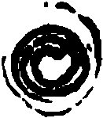

(entre Saint Remy et la Toussaint) À Metz
(France), sont vus en l'air des signes merveilleux comme de grands brandons de feu de la longueur de 4
toises et de grosseur comme d'un pied, et dure en l'air la moitié entre 7 et 8 mn, et sont vus par 2 fois.
Certains racontent avoir vu en l'air, de nuit, comme une bataille de gens et avoir entendu grand bruit Les Chroniques de la ville de Metz recueillies, mises en ordre et publiées pour la
première fois par Jean-François Hughenin, Metz, 1838, p. 297 < Deliyannis, Yannis : "1461, October 15th
- November : Metz (France)", Magonia Exchange, samedi 13 octobre 2007Même observation que celle du ?.
(Toussaint)
Illustration incluse par le copiste

A Arras (France) et dans les environs, on voit dans le ciel une chose ardente à
l'apparence d'un barreau de fer bien long et gros, de 4 toises environ d'épaisseur, semblant de la moitié
de la taille de la Lune, qui restant dans le ciel entre 7 et 8 mn ; et
voit-on clair comme en pleine lune ou plus, et enfin ce barreau qui était long se trincquilla Trinquiller (se) : Selon Reiffenberg, ce verbe est lié au "trinque-buisson" qui est un outil en forme de croissant utilisé pour tailler les arbres ou les buissons
en telle maniere Voir illustration ci-contre, et remonta aux cieux ; plusieurs gens
d'autour et dans la ville le virent. Un pareil signe avait-on vu le dernier jour de Saint Remy passé ; plusieurs
gens en ce temps aussi disaient avoir vu plusieurs signes dans le comté d'Artois, comme voir des gens armés en
l'air ; et même d'aucuns disaient, que quand la ville d'Encre fut ardse y olt des gens qui allaient audit Encre
et qu'eux étant assez près, ils rencontrèrent des gens grands et noirs qui leur demandèrent : Où
allez-vous ? - À Encre ; répondirent-ils, Allez, nous avons brassé et fait faire un beau feu à
Encre. "De plusieurs signes qui furent veus en la ville d'Arras", Livre 4, chapitre 37, Mémoires de Jacques du Clerc (1420-1501), sur le règne de Philippe le Bon, Duc de Bourgogne, publiés pour la 1ère fois par le Baron de Reiffenberg, Bruxelles, 1836 (2nde édition), Tome 3, p. 189 < Deliyannis, Yannis: "1461, November 1st (Sunday) : Arras (France)", 26 septembre 2007Grégoire de Tours ?Jacques Duclercq : conseiller
de Philippe le Bon, duc de Bourgogne, Mémoires d'un bourgeois d'Arras < Jacques Bassard, av. Président Wilson, membre de
la société d'astronomie de France, BSAF, 1954Même observation que celle de fin octobre/début novembre ?.